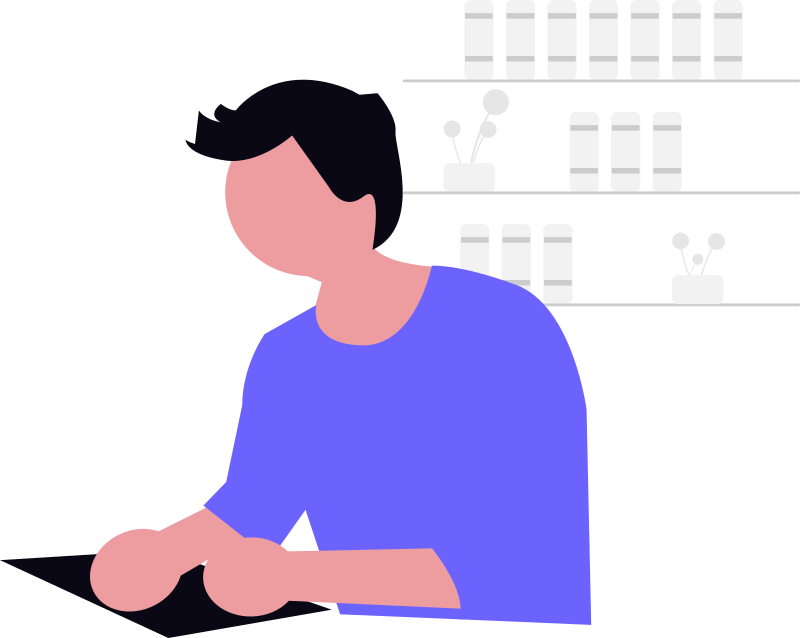
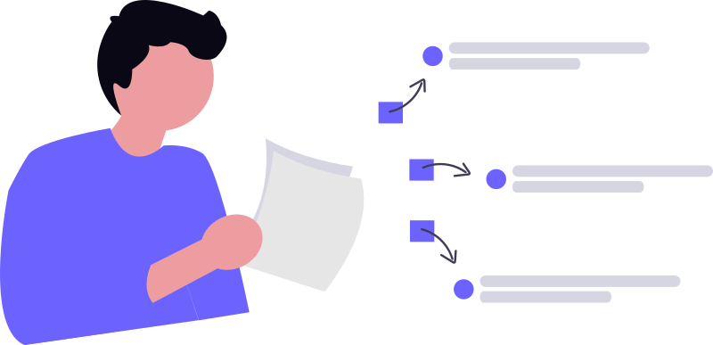
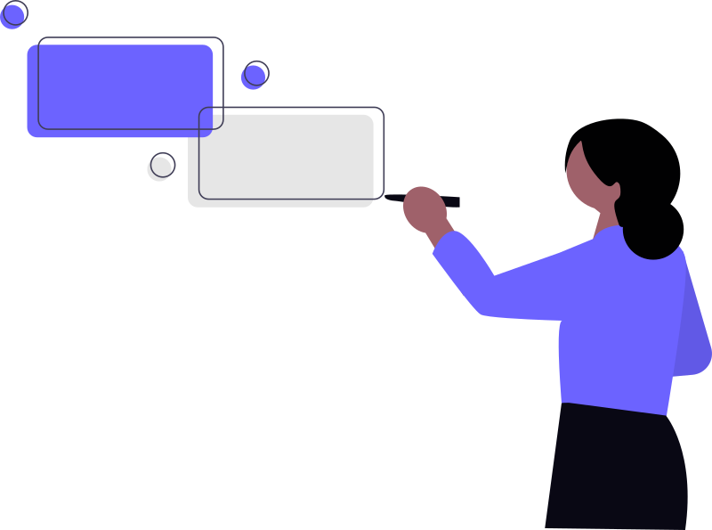

Kina
Développeur Full-stack
Codeloccol m'a donné les compétences techniques et la confiance néccessaires pour devenir Développeur. L'apprentissage par pairs et l'accompagnement des coachs ont fait toute la différence dans mon parcours.

Mahamadou
Brah
Développeur Full-stack
La methode d'enseignement de Codeloccol est révolutionnaire. J'ai pu maîtriser HTML, CSS, JavaSvript et React en quelques mois grâce à la pratique intense.

Ibrahim
Djingarey
Désigner UX/UI
Les projets pratiques m'ont permis de construire un portfolio solide. Aujourd'hui, je travaille sur des projets d'agritech et d'e-commerce grâce aux bases acquises ici.
Yacoubou
Dévellopeur Font-end & Mobile
De HTML/CSS à React Natice & flutter, Codeloccol m'a accompagné dans une progression logique et structurée. La communauté d'entraide est exceptionnelle et m'a motivé tout au long du parcours.
Mariam
Chef de projet Tech
Au-delà du code, Codeloccol m'a appris la gestion de projet, Git et les soft skills. Ces compétences me servent quotidiennement dans mon rôle de chef de projet.

Haoua
Entreprneur Tech
Grâce à Codeloccol, j'ai pu créer ma propre startup tech. La formation complète m'a donné tous les outils pour développer des solutions innovantes pour l'Afrique.
Haoua
Entreprneur Tech